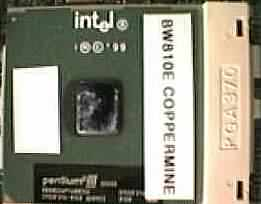
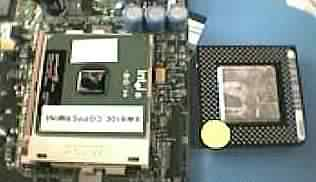

|
|
| 当前位置：电脑报电子版 > 1999 年 > 39 期 > 硬件周刊 > 硬件暸望台 |
| 《 硬件暸望台 》 |
|
CPU及芯片组方面： 有消息说Intel正在慢慢地从主流的Slot1封装形式向低成本的Socket 370过渡。Intel下一代芯片将转向0.18微米工艺制程,不仅主频可以更高，而且片内256K的二级缓存也将全速运行。新的Socket 370 PⅢ称为FC－PGA370，FC代表“Flip Chip”，是一种Intel曾谈起过的封装方式，不过这并不是什么新技术，IBM Microelectrionic就使用过这种技术，这项技术可以使CPU和主板接触更良好。 Coppermine蓄势待发，700MHz和733MHz的Coppermine将在10月中旬上市。这样看来，Intel又落后AMD一步，因为Athlon 700将在10月4日上市。 图1和图2是来自hardcop的两张Socket 370 PPGA封装的Coppermine的图片，图中主板为i810E芯片组的产品。 700MHz和733MHz Coppermine原计划推迟到年底发放市场，此次提前不知什么原因，难道是Intel不希望AMD独领风骚？ 立志成为亚洲Intel的VIA准备在近期发布500MHz的Socket 370 CPU，代号为Joshua。由于在CPU制造方面VIA是新手，所以此次仍是延续Cyrix的老路，Joshua基于Cayenne芯片核心，对Cyrix MⅡ进行了改进，并增加了3DNow!指令的支持。一级缓存为64K，二级为256K。 显示器方面： Sony推出了新型17英寸多媒体显示器HMD－H200，不仅能用于电脑，还可通过AV输入端子连接电视游戏机和DVD影碟机。它采用超平面FD特丽珑显像管，减少了屏幕边缘的偏差，大大提高了画面对比度。此产品有画中画功能，能设置大中小三种尺寸，可以边下载软件边玩游戏！另外，HMD－H200还内置了电视接收机，不过是日本制式的，对于我们来说没什么用。内存方面： 台湾大地震导致芯片价格上涨。台湾发生大地震后，分析家认为，这次地震很可能会与上一次台湾停电的影响一样，使世界芯片价格上扬。尽管在台湾的主要半导体厂商的生产线没有遭到破坏，但芯片生产由于停电而停了下来，64Mbit SDRAM颗粒的价格将超过15美元，现在正在向20美元进军。据内存条厂商表示，128MB的内存条价格已达230美元，预计将会继续上涨。分析家认为台湾芯片占据世界DRAM市场份额的5％，所以他们对于市场的影响非常大。主板方面： 主板制作商在开发高频率主板上遭遇到挫折，由于缺乏高频运行主板设计经验，在高频运行下，容易有杂讯出现影响传送信号，因此在电路板屏蔽与用料上都需要特别讲究，否则容易出现系统不稳定的情况，尤其是在开发AMD Athlon 200MHz外频的主板产品时。显示卡方面： 本周填充率 Vs T＆L的争论热得发烫，注意，这实际是3dfx Vs nVIDIA的战争，连游戏巨匠也不甘寂寞地参加进来：John Carmack（id software，Quake系列游戏制作人）：T＆L Vs 填充率实际就是三角形生成率Vs填充率，显然前者更为重要，因为只要改变分辨率，填充率变化就会很大，从320×240到1600×1200，填充率变化率是 25：1，而三角形方面的变化最多也不过是4：1。如果加入抗锯齿功能情况就复杂得多，多边形越多，锯齿就越多。抗锯齿是一个伟大的功能，因为它可以使所有场景都更漂亮。2×2抗锯齿功能实际并不是高质量的抗锯齿，但这种通过原始点采样的抗锯齿功能仍然很重要。对速度要求较高的动作游戏，我倾向于使用T＆L解决方案，当然在快速的移动中，你是不会在意是否有锯齿的，而在速度慢一些的游戏中，抗锯齿可能很重要。 Tim Sweency（Epic，Unreal制作人）：在以后的几个月里，填充率将占据主导地位，Unreal的引擎对填充率要求很高，而Q3 Arena则要求有大量的多边形。我想下一代的3D卡完全具备足够强大的多边形处理功能，但填充率仍将是限制因素。我预测来年会有所改变，我希望游戏会完全支持T＆L，长期以来，硬件几何性能都是最重要的性能。 也许这场争论马上就有定论，因为有两家网站已率先评测了Creative GeForce 256 Annihilator显卡。这块GeForce显卡核心为120MHz，内存为166MHz，5.5ns 32MB现代SDRAM，在评测的韩国网站上还写着10月2日上市！两家评测的结果大致相同：在1024×768以下的分辨率， GeForce和TNT2 Ultra没什么不同。但在1024×768以上的分辨率，GeForce性能高出将近一倍。在高分时超出是正常的，GeForce的填充率高于TNT2 Ultra。至于低分辨率则没有提高，也许是驱动还不完善的原因。另外，GeForce对CPU依赖性也很强，PⅢ550比450就快得多，Celeron 300就显得有些慢，这使我再次对T＆L产生了怀疑，既然有了硬件几何转换和光照，为什么还必须要这么好的CPU与GeForce相配？这样一来，T＆L的价值何在？ 对于3dfx，这是黑色的一周，3dfx的财政状况非常糟糕，股票一再下跌，几天前每股市值仅为9美元（老天，都快成垃圾股了）。而业内人士估计3dfx股票的低潮期仍将持续一段时间，原因可能是nVIDIA即将发布革命性的3D芯片GeForce，而3dfx目前尚无产品可与之对抗。谣言盛传Voodoo4将延迟推出，几天后,3dfx的CEO亲口证实了此事，Greg解释说因为财政问题，所以Voodoo4无法如期推出，预计在明年二月上市。但我觉得事情不是那么简单，可能是设计上遇到了什么困难。 S3方面，台湾厂商耕宇和撼讯准备推出基于Savage4 Xtreme芯片的显卡，内核时钟是143MHz，最高档的Xtreme＋版本的时钟频率则达到166MHz。据耕宇表示，目前Xtreme＋版本正在测试中，预计166MHz的Xtreme＋的性能已达到TNT2等级，部分功能甚至高于TNT2。 其他消息： 康柏公司将推出Aero 1530型掌上电脑，据称这款产品是目前体积最小的掌上电脑。Aero 1530型掌上电脑在尺寸上和Palm V型掌上电脑非常相似，可以很方便地放在衬衣口袋中。Aero 1530型掌上电脑配备有16MB内存，长达14小时的可替换电池，Type I型PCMCIA插槽以及支持MP3数字音乐存储格式的软件等。使用Windows CE的掌上电脑销量得不到上升的主要原因之一，是因为其外型比较笨重，希望此产品能改变它的销售情况。另外，Palm公司计划在10月4日推出Palm Vx型掌上电脑，Handspring公司也将在今年推出第一款Palm掌上电脑的兼容产品。索尼公司在东京举行的个人电脑展示会上展示了一款配置内存（Memory Stick）的Walkman，可以播放存于CD中的MP3，准备在12月中旬在美、欧和日销售。这款产品可以将MP3文件直接传输到Walkman上的一条外型像口香糖的内存条（Memory Stick）上，然后放进Walkman就可以播放了，由于它采用了一项只能播放不能copy的版权保护技术，所以用户不必担心版权问题 。 （蓝心箭/邱晓光 飞越3D/ion） |
| 下载本期推荐软件 | 页 首 |
| 《电脑报》版权所有，电脑报网站编辑部设计制作发布 |